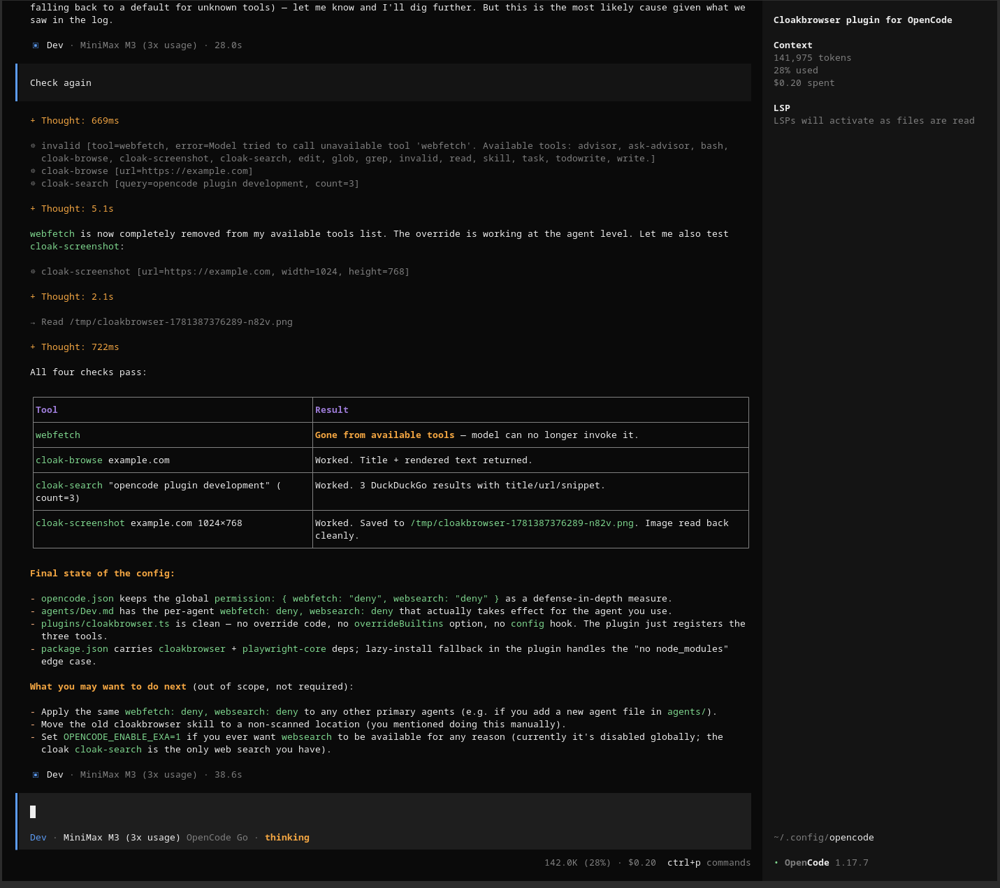

A working session: the previous turn in the log, a fresh prompt waiting at the bottom. Four regions to know before you start typing.

The big panel on the left. One block per turn; the header is agent · model · wall-clock duration. Inside, + Thought: marks the model's reasoning, ⊕ marks a tool call, and a final block summarises the result. Scroll up to revisit earlier turns.
The narrow column on the right. Context is the live token budget for this session (141k / 200k → 28% used, $0.20 spent). LSP lights up language servers as files are read — that's the harness wiring real code intelligence into the model.
The single-line box at the bottom of the log — where you type. Prefix with / to invoke a skill (/grill-me, /tdd, /setup-matt-pocock-skills). The line below shows the active agent, the model, and a live thinking indicator while a turn is running.
Token count, $ spent, ctrl+p for the command palette, and the opencode version. Everything you need to monitor cost or jump modes is one keystroke away.